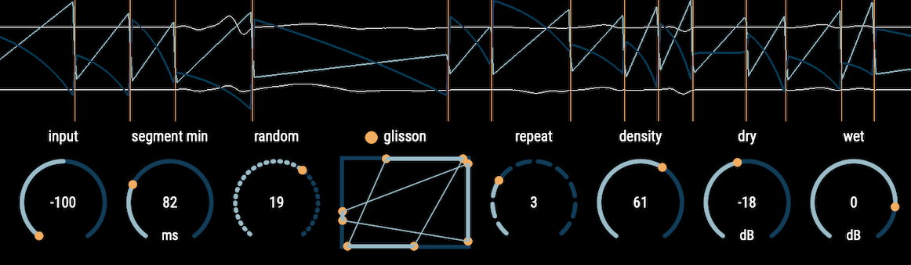

Radical Process
audio processing with radical, unique, and unprecedented approaches
curtis
An Audio Plugin for Intel-based Mac and Windows (VST3/AU)

Synopsis
Curtis is a waveset-segment-glisson granulator. Unlike normal granulators, the plugin segments the incoming audio signal along the zero-crosses and does not apply any windowing functions that may destruct the characteristics of the original sound. The segmented snippets of audio signal are cached and played back with specified number of time and order from the different stereo positions with glissandi. This process creates a particle-like sound effects with radical transformation of the original sound by keeping the sonority of it.Demos
Donation
If you use this plugin for your productions, please consider donating the plugin. The donation will be used mainly for the framework license fee, Windows code signing certificate fee, and Apple developer program membership fee for the code signing and the notarization. Any donations are appreciated.